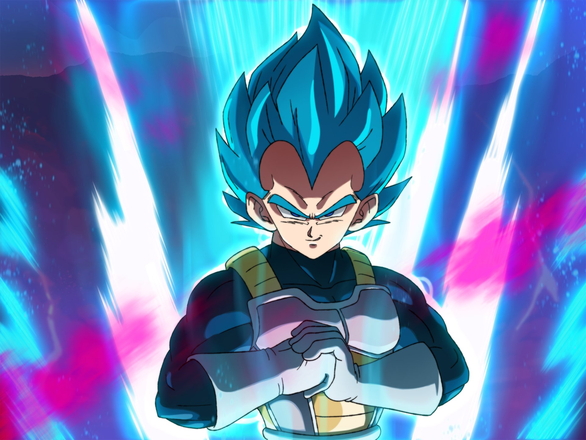
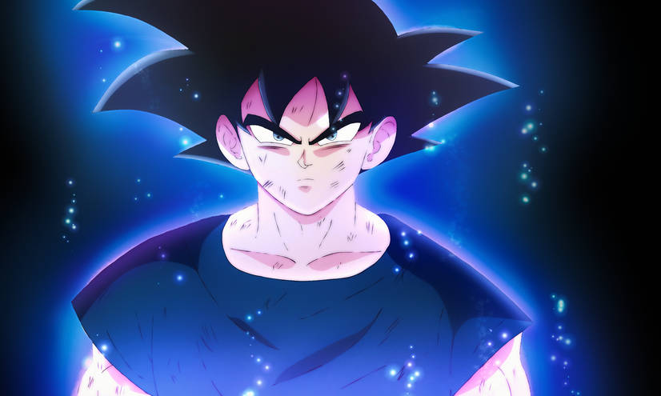

Divine Ascension

Super Saiyan God is a powerful transformation in the Dragon Ball series, characterized by vibrant red hair and a significant increase in a Saiyan's strength, speed, and combat abilities. To achieve this form, a Saiyan must perform a ritual or absorb the energy of other righteous Saiyans. Super Saiyan God is a precursor to even more powerful forms like Super Saiyan Blue, showcasing the evolution of Saiyan power throughout the series.
Super Saiyan Blue, also known as Super Saiyan God Super Saiyan, is an advanced Saiyan transformation in the Dragon Ball series. It combines the power of a Super Saiyan with the godly energy of a Super Saiyan God, resulting in an intense, deep blue aura and hair color. This form offers tremendous power and increased combat abilities, making it one of the most formidable transformations in the Dragon Ball universe. The form can also be ascended into Blue Evolution and empowered by Kaioken.
Ultra Instinct is an advanced state of combat in the Dragon Ball series, characterized by a calm and serene demeanor. It is an incredibly rare and powerful transformation that allows a fighter to react to and dodge attacks instinctively, without conscious thought. Ultra Instinct grants immense speed and strength, making it one of the most formidable abilities in the Dragon Ball universe.

Ultra Ego relies on the intense emotions and lust for battle of its users, allowing them to tap into the power of destruction and use attacks and abilities similar to the Gods of Destruction. However, it has limitations and can be bypassed by powerful attacks, and its prolonged use can drain the user's stamina.